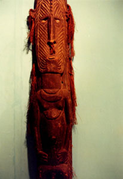

|
第１３
 そんな馬鹿な事があるもんか。よしっ！俺がいって話を付けてくると捨て台詞を残して、花輪支隊副官磯 村中尉（山口高商卒）に怒鳴り込んだ。彼はロイド眼鏡を鼻に掛け、チョビ髭を生やしていた。が、平然と して『山口さん、私がもらった作戦編成名簿には、軍通信隊は載っておりません』という。この時は、実に 情けないと思った。重大なミスではないか。これでは我が軍通信隊は犬死だ。もし敵の潜水艦攻撃で撃没で もしたら、軍通信隊はどうなるか？畜生！軍通を無視したと腹がたった。私のただならぬ顔を看て、磯村中 尉は気を取り直し 『山口さん、すまんが、船底に行って見て下さい。まだ、何かあるでしよう』といった。私は河本上等兵を１名つれて、甘味品のある事を期待して、階段を降りて船底に降りていった。各階には 、諸部隊の将兵が、奴隷船の奴隷に似たような格好で寝そべっていた。これが、今から敵前上陸を敢行する 日本軍の将兵達である。ちょっと、異様に感じた。その側を通って、船底に付いた。驚いた事には、タバコ 、飴玉、水飴、酒、缶詰等の甘味品がそこらぢゅうに散乱している。私と河本上等兵は２人で持てるだけの 甘味品を持って甲板に戻った。私どもの姿を見て、部下は大喜びした。口髭を生やした、補充兵の田中上等 兵が「山口隊長殿、酒はあまり飲みたくないですね」と言って、話しかけてきた。赤道をさらに南下する。 うだるように暑い。波に揺られ四方八方海ばかりだ。今から敵前上陸だし、また、この暑さではお酒など飲 む気にはなれない。 護衛飛行中隊の１機が敵機にやられて、輸送船の近くに不時着した。胴体にある赤い日の丸が目に染みる。 すると、護衛中の駆逐艦が白波を立てて急カーブを切り、洋上の飛行機に接近し操縦士を救助した。麗 しい情景だった。それから３０分程してから、私どもの輸送船団を狙ってコンソリテーテッド二十四型重爆 撃機が只一機で来襲して来た。 何と！その敵機は我ら軍通信隊が乗船している主力艦（旗艦）を狙って、 上空４千メートル付近から爆弾を投下した。ピカッと銀色に光った物体が見えた。 爆弾だ！ 艦橋にいた艦長は、その光った一瞬をとらえ 「おもかじ！いっぱい！」と怒鳴った。 さすがに、判断は的確だ。投下された爆弾を回避できた。が、艦の近くに落下し海面にもの凄い白波が立ち、 海の水が円筒状に立ち上がった。凄まじい光景だ。海戦の絵に描かれてある様と全く同じ光景でした。爆弾 は回避できたが、海面で炸裂した爆弾の破片がそこらぢゅうの甲板とか壁につきささった。誠に危機一髪だ ったのであります。海軍さんが爆弾の破片を私に見せてくれました。その破片は鈍く紫色に光っていて、破 片の長さは約１５センチ、幅は約５ミリ、厚さは１ミリぐらいで、鋭利に曲がりくねった薄い鉄片で鋭利な 刃物と同じでした。こんな鋭利な破片が体に当たったら一発で即死だ！この様な鈍く光った鉄片を見せられ た時はゾーッとした。幸いに戦死者は１名もなく誠に幸運でした。 |